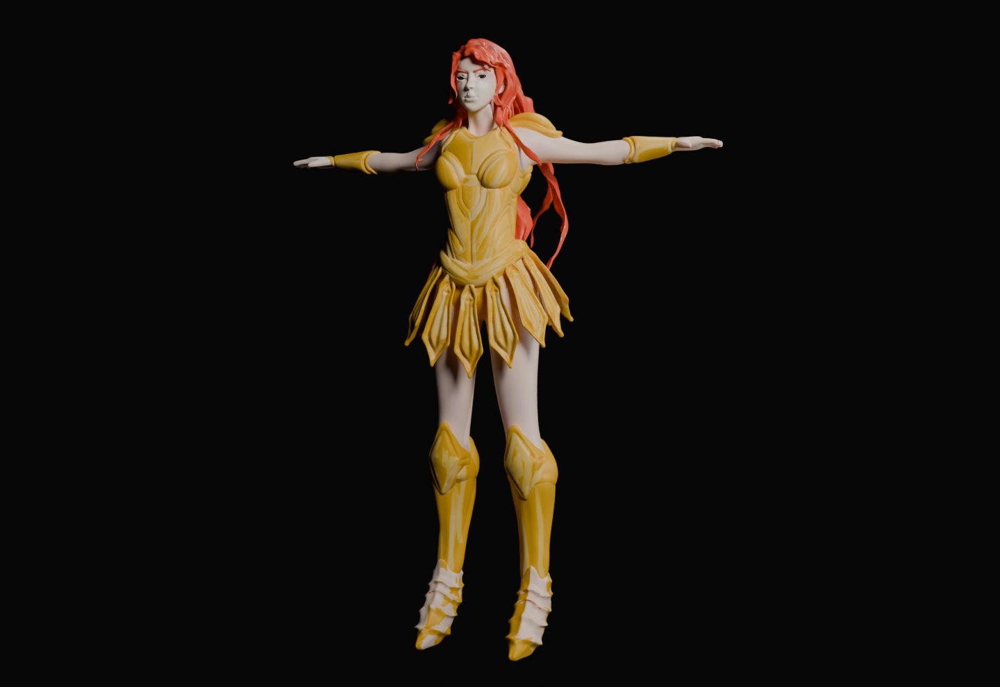
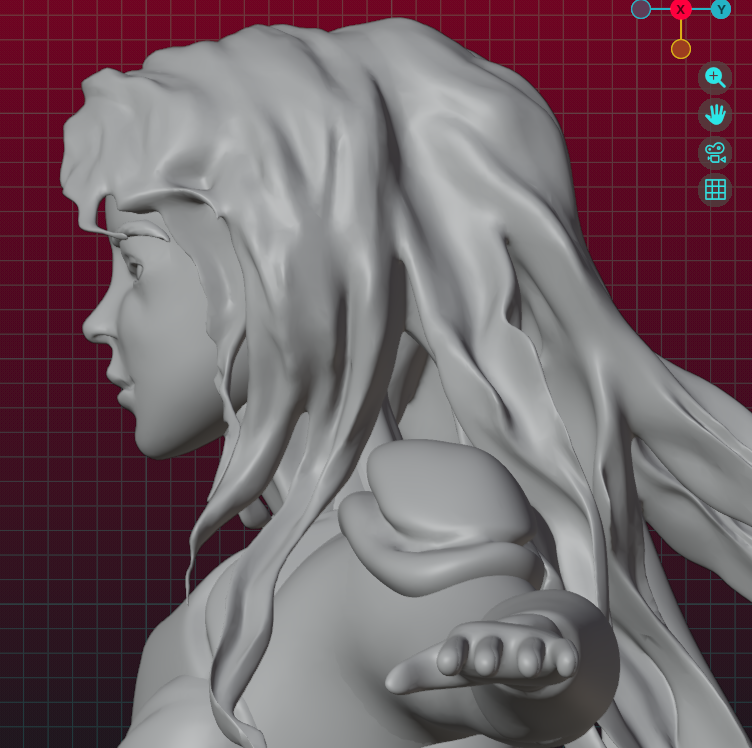
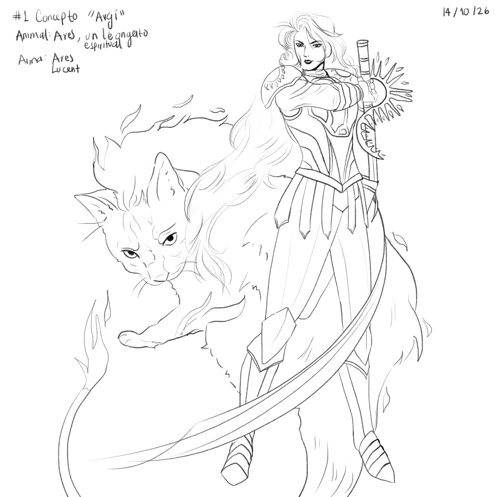
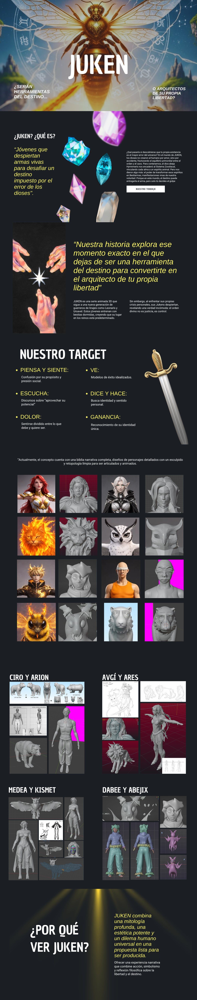
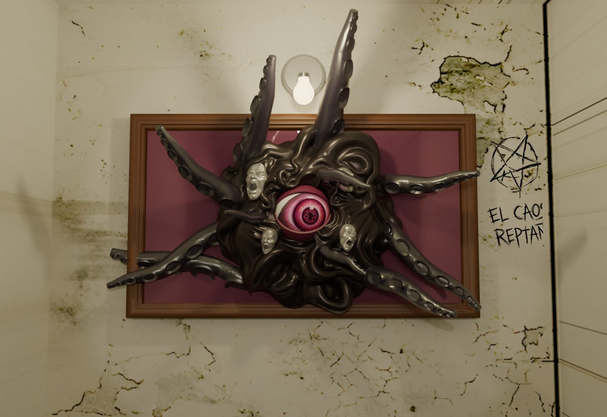
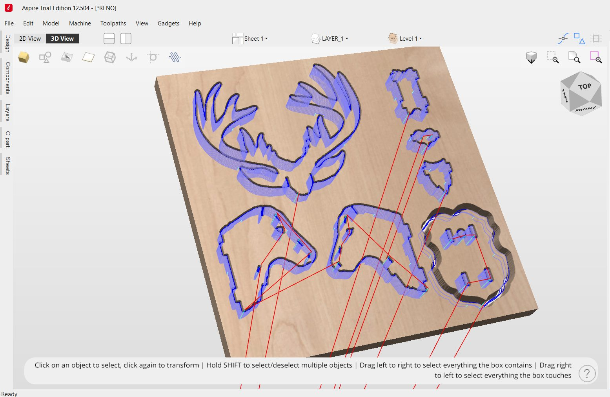
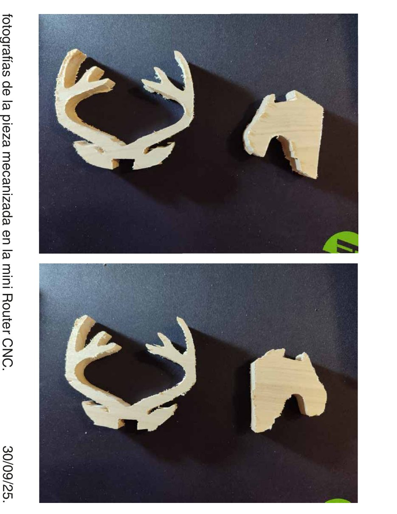
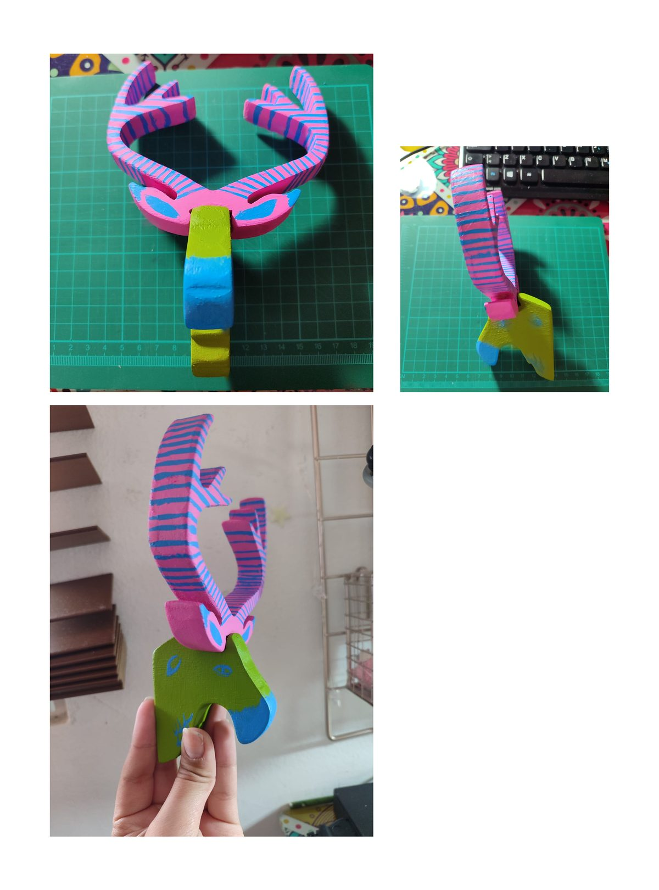

Estela
Animación · loop
Una esfera que deja rastro: timing, arco de movimiento y luz de borde.3D + Exploración
Modelado, escultura digital, animación y un poco de texturas: le doy volumen, movimiento y superficie a una idea hasta que encuentra su forma.
Entrar al laboratorioAntes de decidir la forma
A veces hay que dejar que la materia haga la primera pregunta.
Mesa de exploración
Tres oficios y una actitud: modelar, animar y texturizar, siempre con espacio para probar algo nuevo.
01 / Serie animada 3D
¿Serán herramientas del destino… o arquitectos de su propia libertad?

“Jóvenes que despiertan armas vivas para desafiar un destino impuesto por el error de los dioses.”
JUKEN es una serie animada 3D que sigue a una nueva generación de guerreros de linajes como Leonaris y Ursavel. Estos jóvenes entrenan con bestias dormidas, creyendo que su lugar en los reinos está predeterminado.
En su mundo, los dioses no crearon al humano por amor, sino por accidente. Para contenerlo, el dios-abeja Hymnmeris encadenó cada alma a un espíritu animal dentro del Sistema Zoodiacal. Pero cuando los jóvenes enfrentan sus propias crisis, sus Jukens despiertan como Bestiarmas —manifestaciones vivas de su voluntad— y revelan una verdad incómoda: el orden divino no es justicia, es control.

PÚBLICO / JÓVENES EN BUSCA DE IDENTIDAD
CONCEPTO #1 / DEL PAPEL AL VOLUMEN
“Antes de esculpirla, Avgí existió en una línea.”
El diseño de personaje que sirvió de guía para el modelado 3D: la armadura, el cabello en movimiento y su Juken, Ares, envolviéndola como una llama.


02 / Animación + texturas
Loops cortos para probar ritmo, luz y superficie: pequeñas pruebas que se repiten hasta que el movimiento se siente natural.
03 / Escultura digital
Una criatura de tentáculos atraviesa un cuadro y arrastra rostros esculpidos consigo. La pieza ya está terminada: gírala, acércate y mira el ojo de cerca.

04 / Fabricación digital
Fab Lab, Universidad El Bosque. Diseñé a Renito, un reno de piezas encajables, lo simulé en Vectric Aspire y lo mecanicé en una mini router CNC. Después vinieron la lija y el color.



El laboratorio
Experimentar no es perderse: es mirar desde suficientes ángulos hasta que el modelo esté listo para moverse.
Reunir bocetos, anatomía y materiales para entender a quién voy a construir.
Encontrar proporción y silueta con formas simples antes de cualquier detalle.
Dar pliegue, músculo, cabello y gesto hasta que la forma tenga carácter.
Limpiar la malla para que el personaje pueda articularse y animarse.
Darle movimiento, color y superficie para que la idea empiece a vivir.
Ensayo abierto
Una idea puede ser muchas cosas antes de elegir una.
Siguiente experimento
Marso Studio — Ideas con estela.